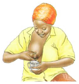
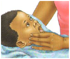

How client can prevent common breastfeeding difficulties

- Position and attach baby correctly on the breast. Breastfeeding should not hurt
- If mother develops cracked nipples, put some breast milk on them. Do not use any types of creams or ointments except when prescribed by a health care provider
- Feed frequently to prevent breasts from becoming swollen
- If baby misses a feed you should express some milk to keep breast soft

- Keep expressed breast milk in a cool place, but not longer than 6-8 hours
- If one or both breasts become painful or hot to the touch, mother should contact a health care provider
- Mixed feeding (combining breast milk with anything else) is not healthy for the baby before 6 months of age. Mixed feeding reduces the amount of milk that mother can produce and also can make the baby sick
- If mother has any trouble practicing exclusive breastfeeding, she should discuss with a trained counselor
Previous
Next